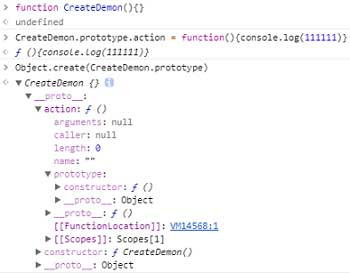

Object.create() 方法会使用指定的原型对象及其属性去创建一个新的对象。
语法：Object.create(proto[, propertiesObject])
- 参数：
- proto：新创建对象的原型对象。
- propertiesObject：可选。如果没有指定为 undefined，则是要添加到新创建对象的可枚举属性（即其自身定义的属性，而不是其原型链上的枚举属性）对象的属性描述符以及相应的属性名称。这些属性对应Object.defineProperties()的第二个参数。
- 返回值：在指定原型对象上添加新属性后的对象。
- 例外：如果propertiesObject参数不是 null 或一个对象，则抛出一个 TypeError 异常。
例子

用 Object.create实现类式继承
下面的例子演示了如何使用Object.create()来实现类式继承。这是一个所有版本JavaScript都支持的单继承。
1 2 3 4 5 6 7 8 9 10 11 12 13 14 15 16 17 18 19 20 21 22 23 24 25 26 27 28 29
| // Shape - superclass function Shape() { this.x = 0; this.y = 0; } <!----> // superclass method Shape.prototype.move = function(x, y) { this.x += x; this.y += y; console.info('Shape moved.'); }; <!----> // Rectangle - subclass function Rectangle() { Shape.call(this); // call super constructor. } <!----> // subclass extends superclass Rectangle.prototype = Object.create(Shape.prototype); Rectangle.prototype.constructor = Rectangle; <!----> var rect = new Rectangle(); <!----> console.log('Is rect an instance of Rectangle?', rect instanceof Rectangle); // true console.log('Is rect an instance of Shape?', rect instanceof Shape); // true rect.move(1, 1); // Outputs, 'Shape moved.'
|
如果你希望能继承到多个对象，则可以使用混入的方式。
1 2 3 4 5 6 7 8 9 10 11 12 13
| function MyClass() { SuperClass.call(this); OtherSuperClass.call(this); } // inherit one class MyClass.prototype = Object.create(SuperClass.prototype); // mixin another Object.assign(MyClass.prototype, OtherSuperClass.prototype); // re-assign constructor MyClass.prototype.constructor = MyClass; MyClass.prototype.myMethod = function() { // do a thing };
|
Object.assign 会把 OtherSuperClass原型上的函数拷贝到 MyClass原型上，使 MyClass 的所有实例都可用 OtherSuperClass 的方法。Object.assign 是在 ES2015 引入的，且可用 polyfilled。要支持旧浏览器的话，可用使用 jQuery.extend() 或者 _.assign()。
使用 Object.create 的 propertyObject参数
1 2 3 4 5 6 7 8 9 10 11 12 13 14 15 16 17 18 19 20 21 22 23 24 25 26 27 28 29 30 31 32 33 34 35 36 37 38 39 40 41 42 43 44 45 46 47 48 49 50 51 52 53 54 55 56 57 58
| var o; <!----> // 创建一个原型为null的空对象 o = Object.create(null); <!----> o = {}; // 以字面量方式创建的空对象就相当于: o = Object.create(Object.prototype); <!----> o = Object.create(Object.prototype, { // foo会成为所创建对象的数据属性 foo: { writable:true, configurable:true, value: "hello" }, // bar会成为所创建对象的访问器属性 bar: { configurable: false, get: function() { return 10 }, set: function(value) { console.log("Setting `o.bar` to", value); } } }); <!----> function Constructor(){} o = new Constructor(); // 上面的一句就相当于: o = Object.create(Constructor.prototype); // 当然,如果在Constructor函数中有一些初始化代码,Object.create不能执行那些代码 <!----> // 创建一个以另一个空对象为原型,且拥有一个属性p的对象 o = Object.create({}, { p: { value: 42 } }) <!----> // 省略了的属性特性默认为false,所以属性p是不可写,不可枚举,不可配置的: o.p = 24 o.p //42 <!----> o.q = 12 for (var prop in o) { console.log(prop) } //"q" <!----> delete o.p //false <!----> //创建一个可写的,可枚举的,可配置的属性p o2 = Object.create({}, { p: { value: 42, writable: true, enumerable: true, configurable: true } });
|
Polyfill
这个 polyfill 涵盖了主要的应用场景，它创建一个已经选择了原型的新对象，但没有把第二个参数考虑在内。
请注意，尽管在 ES5 中 Object.create支持设置为[[Prototype]]为null，但因为那些ECMAScript5以前版本限制，此 polyfill 无法支持该特性。
1 2 3 4 5 6 7 8 9 10 11 12
| if (typeof Object.create !== "function") { Object.create = function (proto, propertiesObject) { if (!(proto === null || typeof proto === "object" || typeof proto === "function")) { throw TypeError('Argument must be an object, or null'); } var temp = new Object(); temp.__proto__ = proto; if(typeof propertiesObject ==="object") Object.defineProperties(temp,propertiesObject); return temp; }; }
|